Assignment 1 - Basic HTML
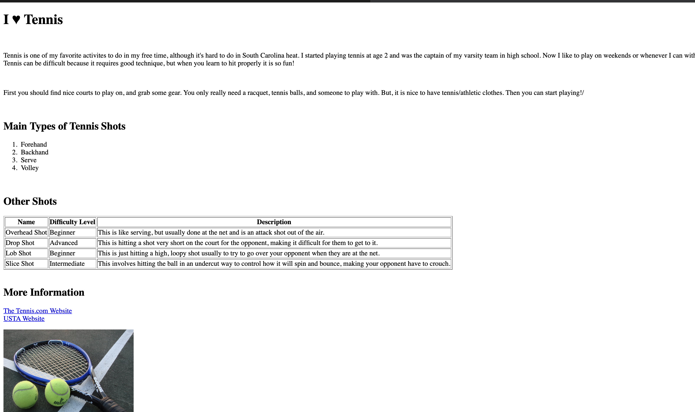
This assignment helped me learn the fundamentals of HTML such as headings, lists, and links.
This course is about web programming using various languages and methods such as HTML, CSS, JavaScript.

This assignment helped me learn the fundamentals of HTML such as headings, lists, and links.
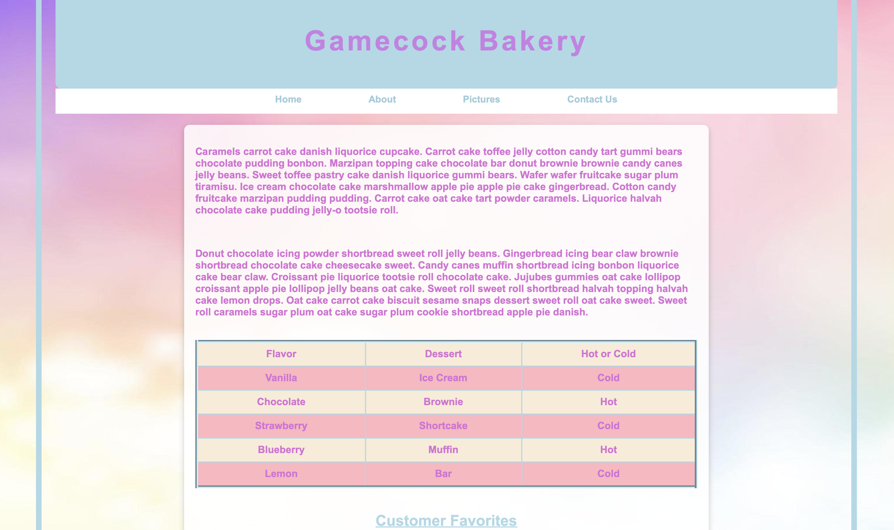
Here, I learned how to style HTML using CSS including colors, fonts, and box model properties.
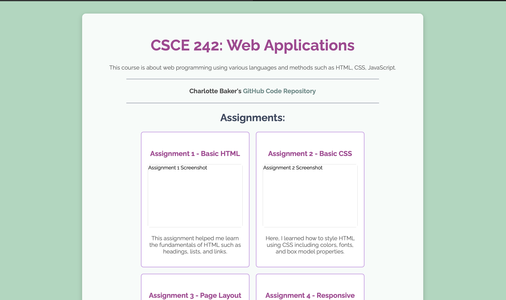
In this task, I used Flexbox to create a layout for my main page that looks better and fits assignments.
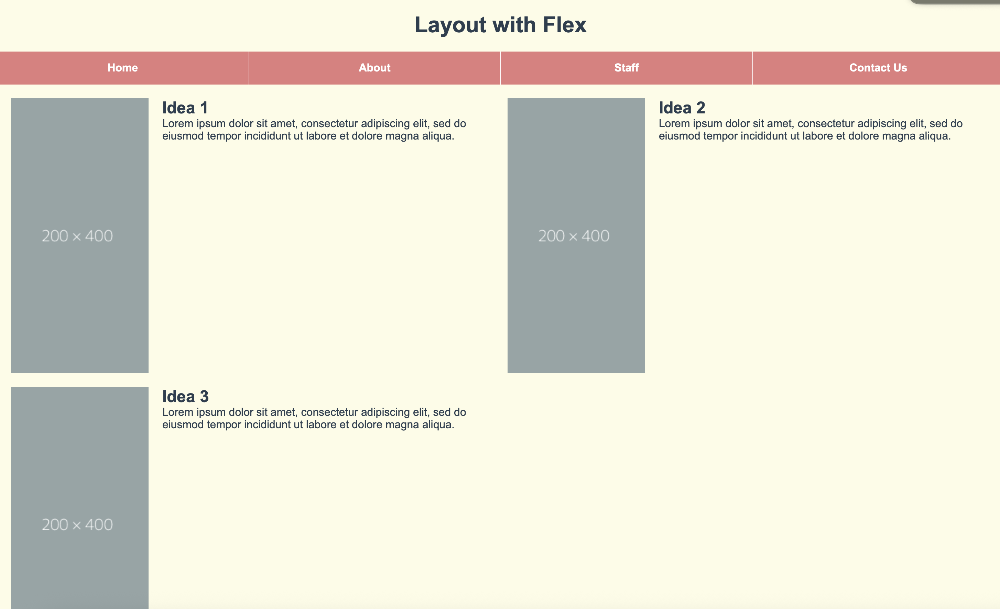
Created a responsive layout and aligned items across different screen sizes for a sample website.
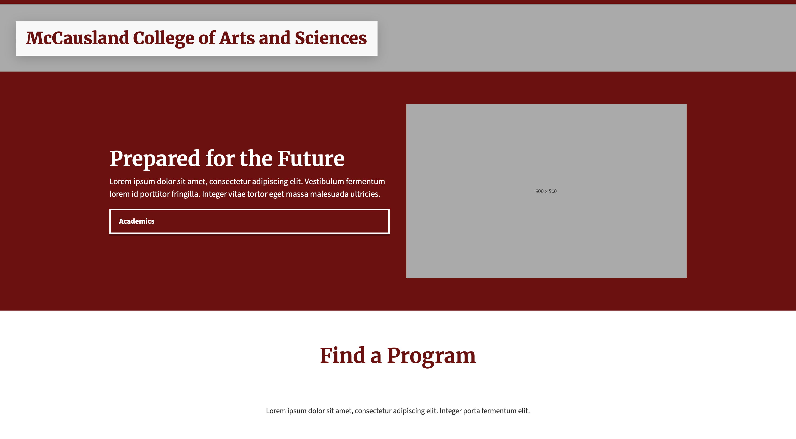
Created a recreation of a uofsc website to help master html and css skills.
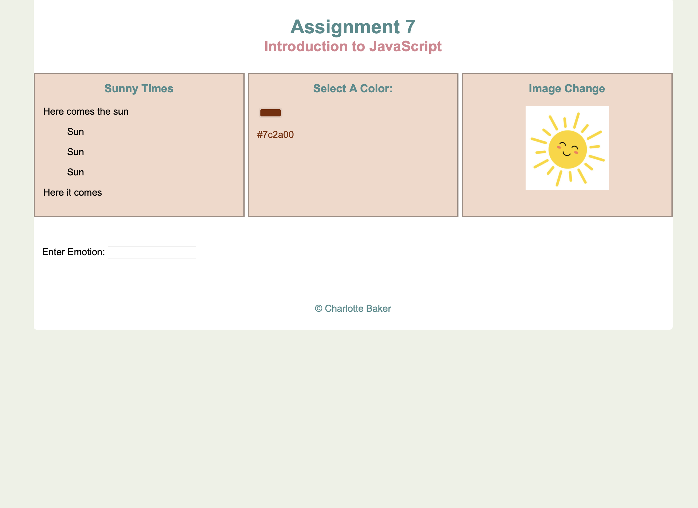
In this assignment we practiced JavaScript using various examples from in-class code.
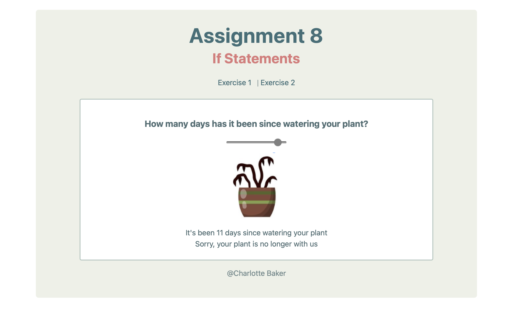
This assignment helped me learn how to use if statements in JavaScript to create interactive web pages.
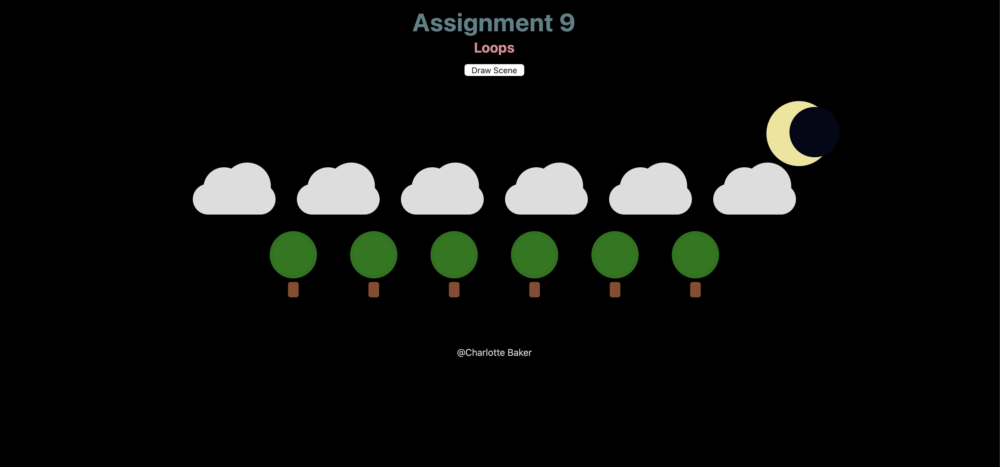
In this assignment, we developed JavaScript loops to show an outdoor scene through multiple iterations.
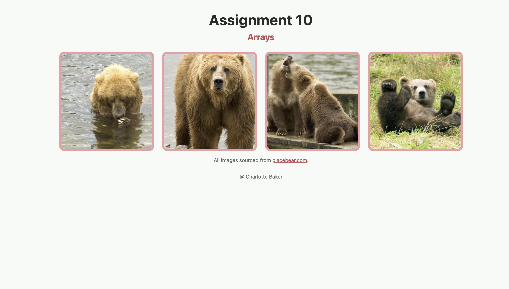
In this assignment, we learned about arrays in JavaScript and implemented one for a pet adoption page.
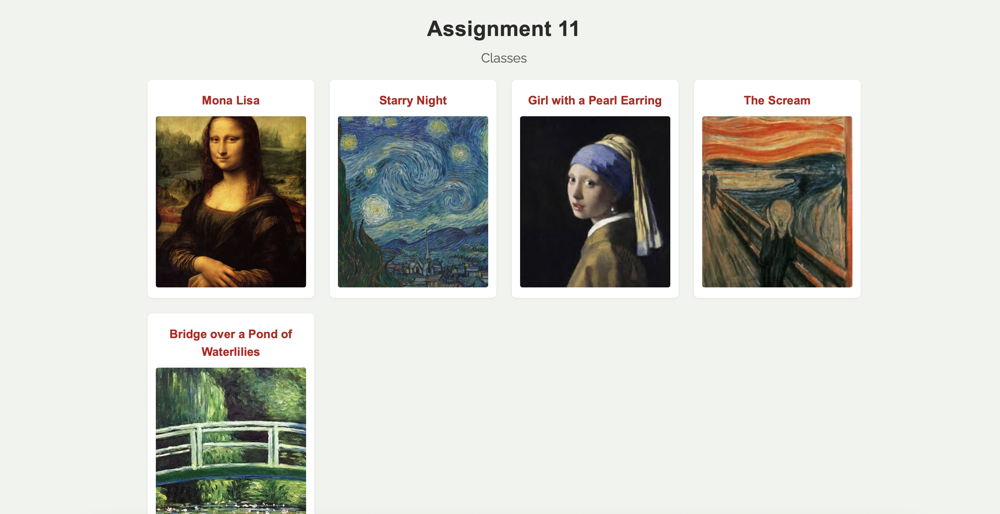
For this assignment, we learned about classes in JavaScript and made a gallery of paintings.
Below are my project steps for the semester. Topic (PDF), Embedded Wireframe,and HTMl & CSS.
A brief doc with the project idea.
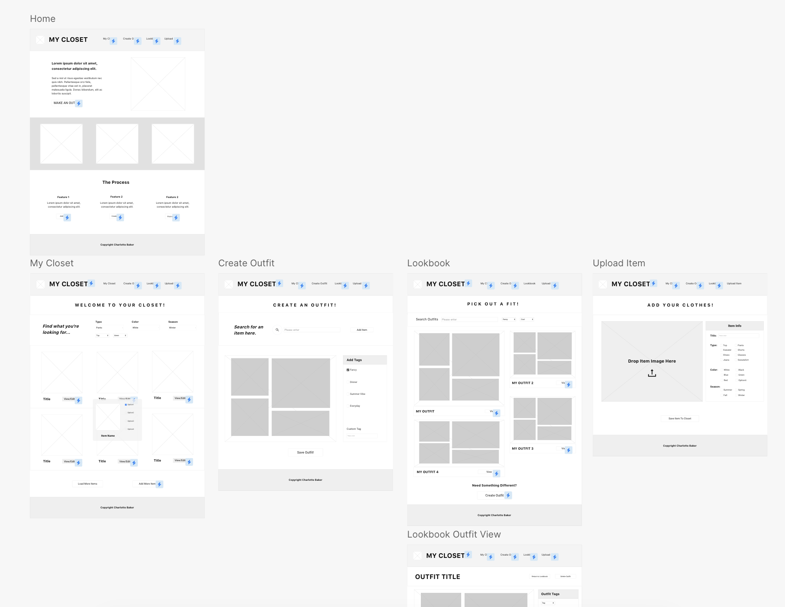
Embedded local wireframes (no external links). Click to view pages.
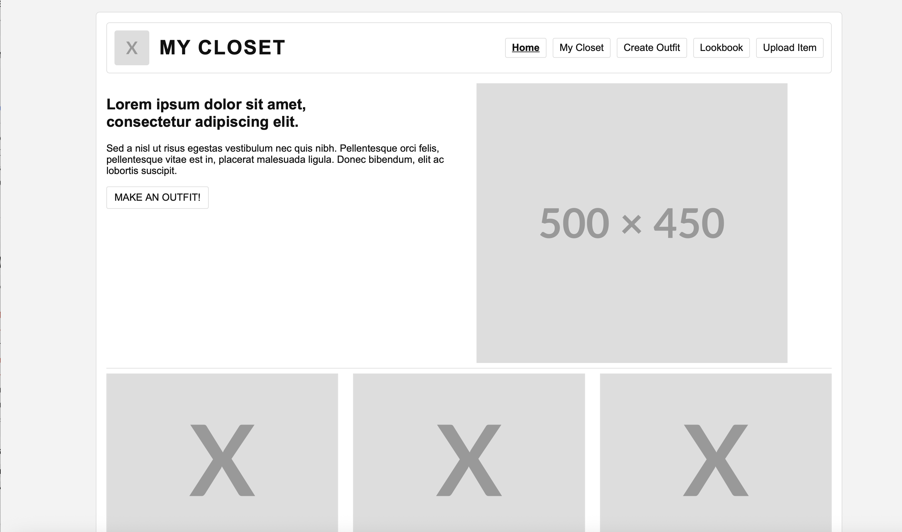
The HTML and CSS of my webpage
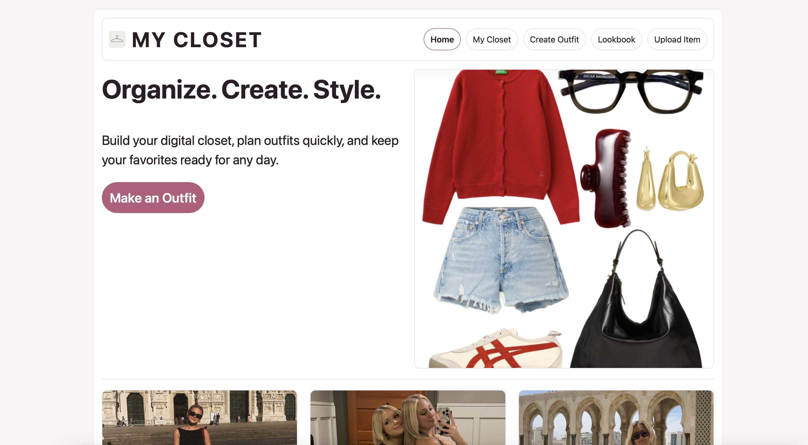
Added colors/theme and images to site
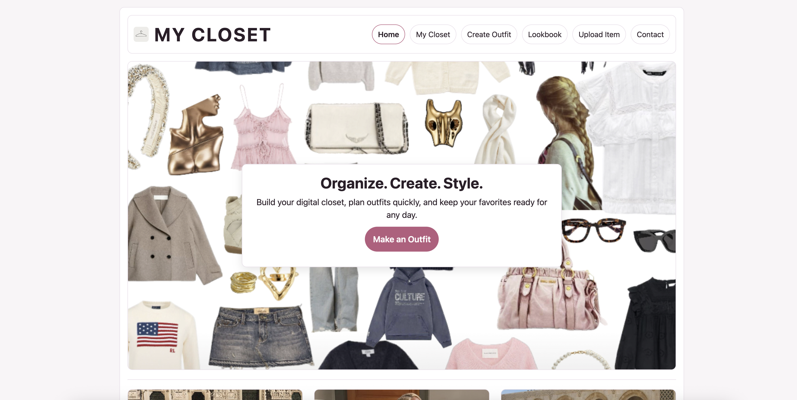
Added directly to pt 4 when submitted, adding a new section before pt 6.